这个页面是什么
Anatomy 是一个 Claude Code / Agent Skill，用一句话把一个想法画成能转动、能按、能读数的等轴测机器图。社区页收集其他人用这个 Skill 画的作品，每件都附上生成它的提示词。
收录流程：作者把源码提交到 wheresryan22/anatomy-community，画廊在一个锁定的沙箱里从源码重新构建，再按统一尺寸拍照，去掉边框、说明和读数，只留下物体本身。截至 2026-10-12，共 30 件作品，来自 10 位作者，用到 4 种模型（以 Claude Opus 5.5 为主，也有 Muse Wonder、Muse Spark 1.3）。按渲染方式分，SVG 27 件、WebGL 2 件、3D 1 件。标签数量：机械结构 10、复古 7、汽车 5、日常用品 5。
作品一览（30）
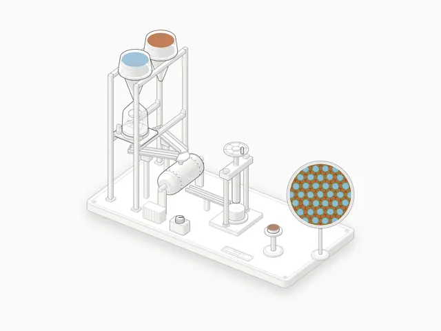
Cu/diamond composite: post-mixing vs pre-coating
铜/金刚石复合材料两种工艺对比：后混合（铜颗粒带碳化物界面层）与预镀覆金刚石路线
提示词：Explain how copper/diamond composites are made, comparing the post-mixing route (a carbide-forming interfacial layer on the Cu particles, mixed with uncoated d…
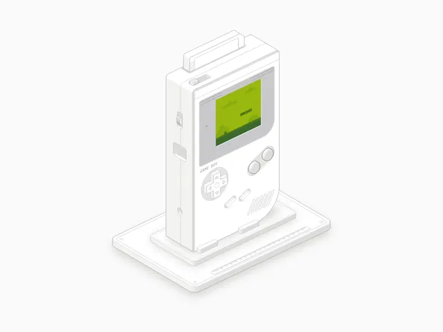
Game Boy
可以玩的 1989 年 Game Boy：十字键和 A/B 键操控 160×144 四阶绿屏上的小精灵
提示词：A 1989 Game Boy you can play: the D-pad and A/B buttons move and jump a sprite on the 160x144 four-green screen.
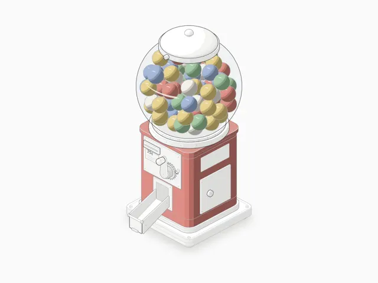
Gumball machine
投币扭蛋/口香糖机：投硬币转把手，拨轮每次只放一颗糖滚下滑道
提示词：A coin-op gumball machine: put in a quarter and turn the crank, the coin wheel lets exactly one gumball fall, and it rolls down the chute against the flap at t…
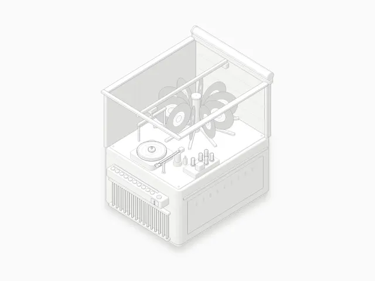
Jukebox
1950 年代点唱机：选唱片后转盘旋转、机械臂送上唱盘，以 45 转播放
提示词：A 1950s jukebox: pick a record and the carousel turns, the arm lifts it onto the turntable and the tonearm plays it at 45 rpm.
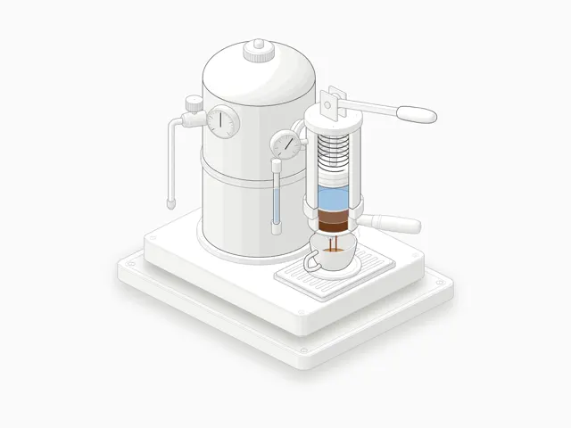
Lever espresso machine
弹簧拉杆意式咖啡机：拉杆预浸泡，松手后弹簧推动活塞约 9 bar 萃取
提示词：A spring-lever espresso machine: pull the lever to pre-infuse at boiler pressure, release it and the spring drives the piston to about 9 bar and lets it fall a…
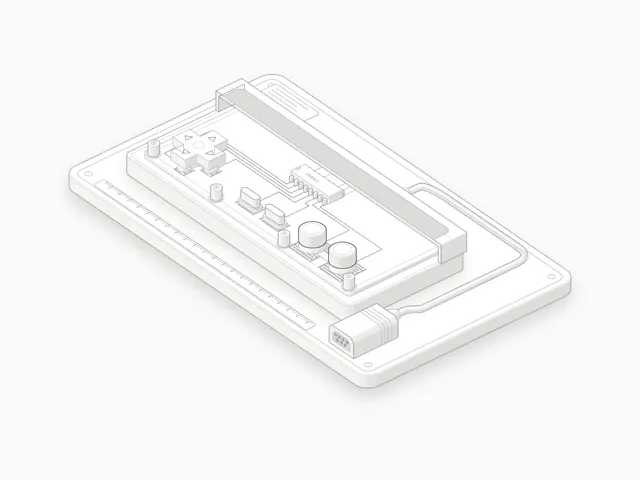
NES controller
剖开外壳的 NES 手柄：按键压合导电胶，4021 移位寄存器逐次轮询发送八个按键
提示词：An NES controller with the shell cut away: press a button, its rubber dome closes the carbon contact, and each poll the 4021 shift register sends all eight but…
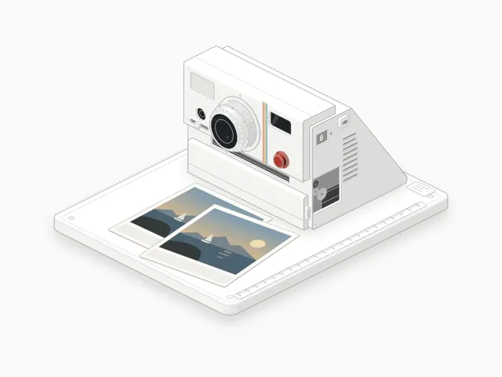
Polaroid camera
宝丽来拍立得：按快门、闪光、滚轴挤出相纸，画面由灰蓝逐渐显影
提示词：A Polaroid instant camera: press the shutter, the flash fires, the rollers push the print out through the reagent, and the picture develops from blue-grey to f…
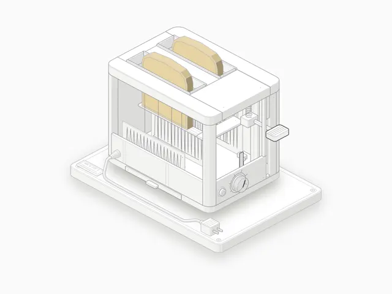
Pop-up toaster
侧面剖开的双槽弹出式烤面包机：镍铬丝发红、面包随吸热变色后弹起
提示词：A two-slot pop-up toaster with the side cut away: press the lever, the nichrome glows, the bread browns with the heat it takes in and the toast pops up.
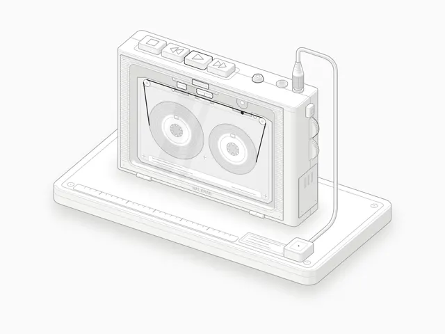
Walkman cassette player
1979 年 Walkman 式磁带机：按播放键看磁带走过磁头，两个卷盘按真实速度转动
提示词：A 1979 Walkman-style cassette player: press play and watch the tape run past the head, with both reels turning at their true speeds.
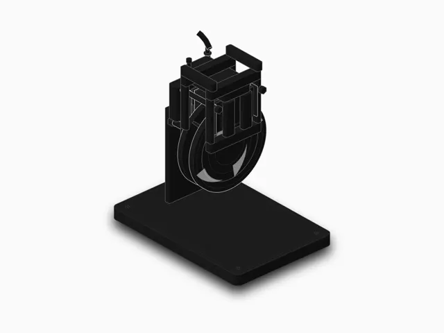
Floating-caliper disc brake
2013 款起亚索兰托的浮动卡钳盘式制动器：卡钳如何夹紧通风盘（3D）
提示词：/anatomy build the brake mechanism from a 2013 Kia Sorento — how a floating caliper clamps a vented rotor, interactive
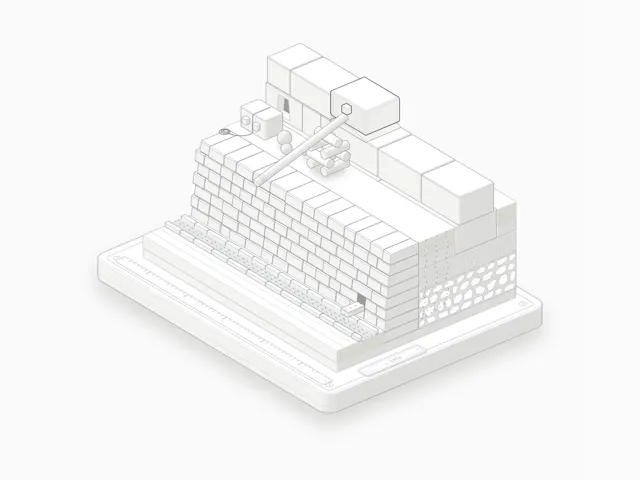
How Machu Picchu was built
马丘比丘如何建成：印加梯田剖面，石块拼合、排水、抗震与沿坡道运石
提示词：/anatomy explain how Machu Picchu was built, interactive: an Inca terrace cutaway with stone fitting, drainage, earthquakes and hauling a block up a ramp
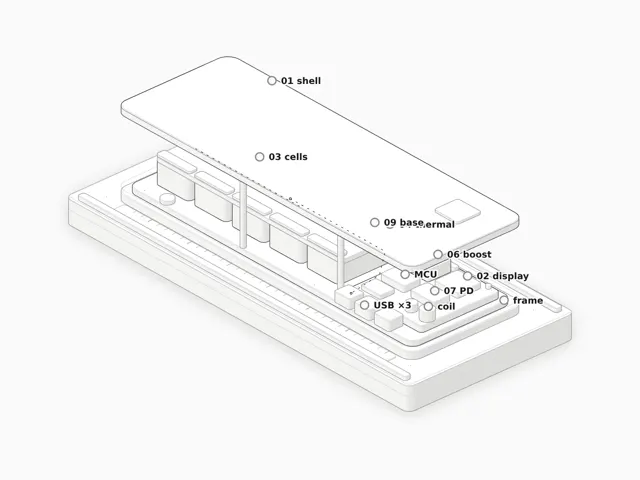
Powerbank anatomy: how a 25,000 mAh 200 W powerbank works
25000 mAh / 200 W 充电宝的内部结构与工作原理
提示词：use that repo to create an explain on how powerbanks work and its anatomy use a simple react page to demonstrate that. use previous examples of back propagatio…
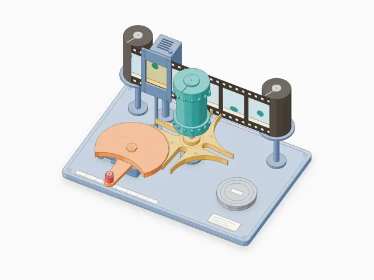
Geneva drive film advance
槽轮（日内瓦）机构：把连续旋转变成间歇运动，用作放映机的帧进给
提示词：/anatomy explain how a Geneva drive turns continuous rotation into intermittent motion, as a film projector's frame advance
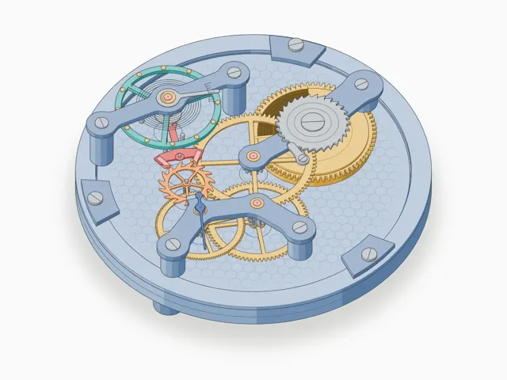
Swiss lever escapement
机械表瑞士杠杆擒纵机构如何计时
提示词：/anatomy explain how a mechanical watch's lever escapement keeps time
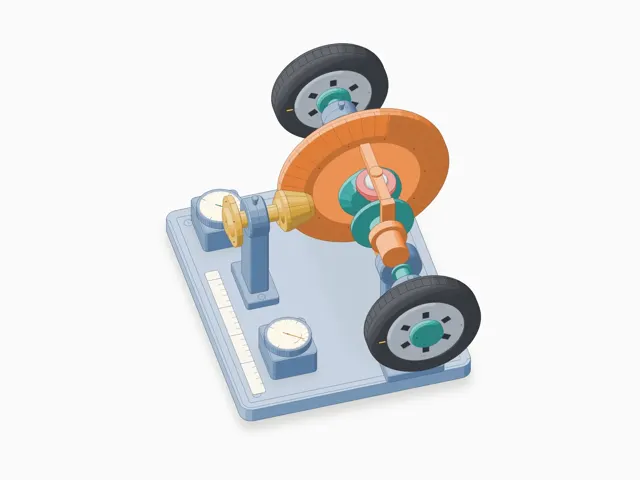
Open differential
汽车开放式差速器：让左右车轮以不同转速转动
提示词：/anatomy explain how a car's open differential lets the wheels turn at different speeds
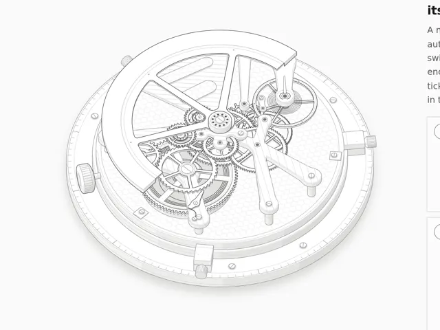
Automatic watch
自动上链机械表：摆陀如何为发条上弦
提示词：/anatomy explain how an automatic self winding mechanical watch works, interactive
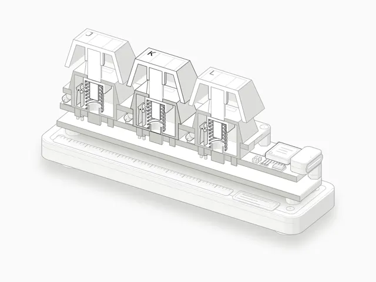
Keyboard switch, sawn open
把机械键盘轴体“锯开”看结构与触发
提示词：/anatomy explain how mechanical keyboard switches work
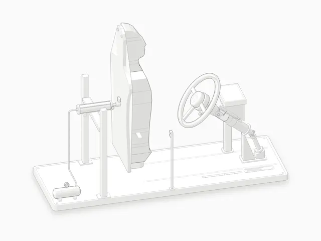
Steering Column Impact Test
转向管柱碰撞测试：按法规试验标准重绘
提示词：Install the Anatomy skill and use it to improve my steering column. Then: fix the drawing to follow the industry standards by rebuilding it as the regulatory t…
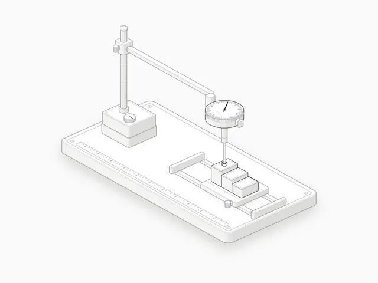
Dial indicator
千分表（百分表）如何测量径向跳动
提示词：/anatomy explain how a dial indicator measures runout, interactive
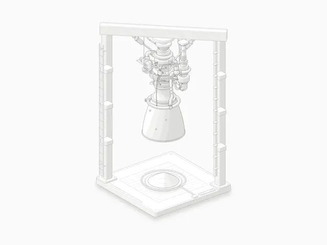
Raptor engine on the test stand
试车台上的猛禽（Raptor）发动机：全流量分级燃烧循环（WebGL 尾焰）
提示词：/anatomy explain how a full-flow staged combustion rocket engine works, as a Raptor on a test stand, interactive
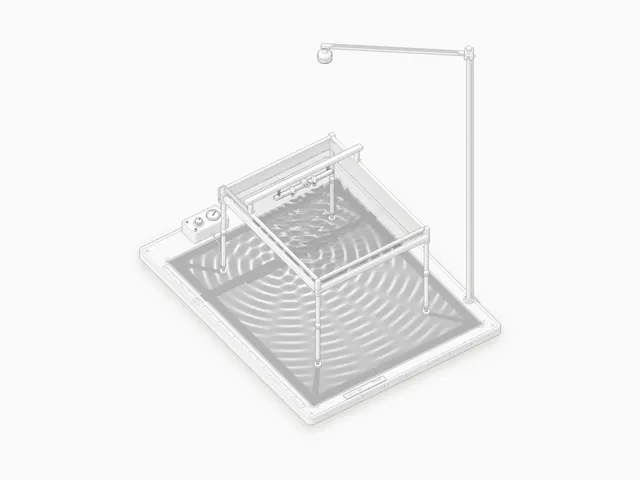
Ripple tank
水波槽：用学校实验的波纹槽演示波的干涉（WebGL）
提示词：/anatomy explain how waves interfere, as a school ripple tank, interactive
如何投稿
照常用 Anatomy 画出作品，然后在同一会话里对 agent 说 publish this figure to the Anatomy community gallery。它会问标题、短 id 和 GitHub 用户名，先给你看要发送的内容，再替你开 PR。没有终端也可以：把源码放进 Gist，填写投稿表单。用 --model 或表单里的 Model 字段注明模型，卡片上就会显示模型标识。